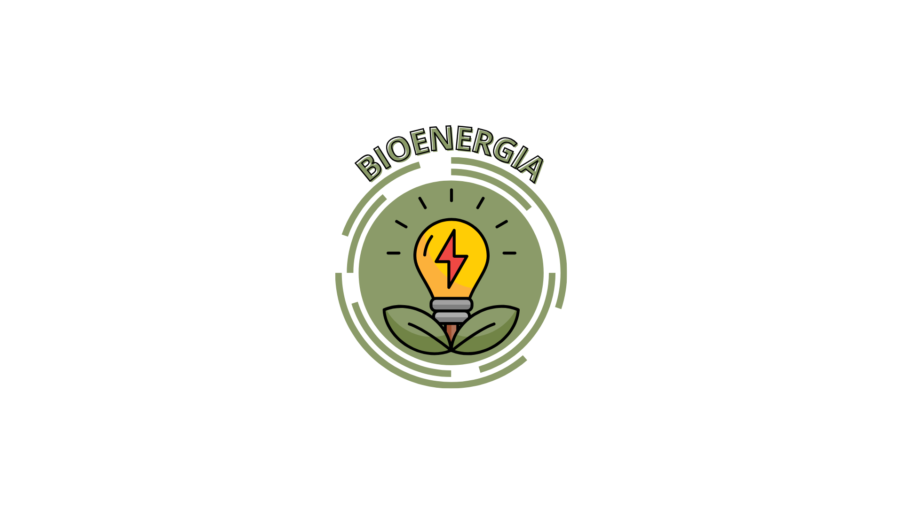

A bioenergia é, de forma simples, a energia obtida a partir da biomassa — ou seja, qualquer matéria orgânica de origem recente (vegetal ou animal) que possa ser transformada em força motriz, calor, eletricidade ou combustíveis. Ao contrário dos combustíveis fósseis (como o petróleo e o carvão, que levam milhões de anos para se formar), a bioenergia utiliza recursos que se renovam em um curto espaço de tempo.